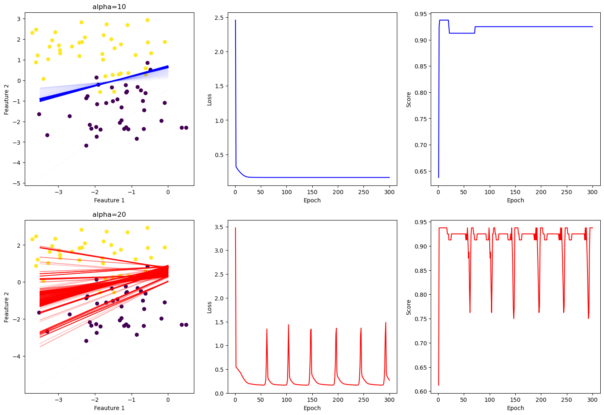
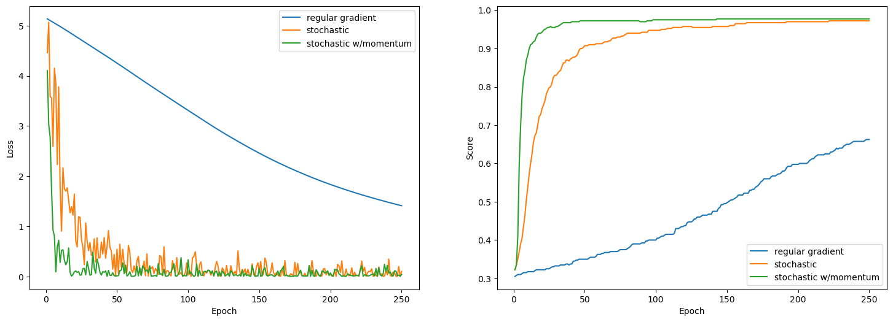

from logreg import LogisticRegression
from sklearn.datasets import make_blobs
from matplotlib import pyplot as plt
import numpy as npLogistic Regression
In this blog post I have implemented logistic regression. I will show what happens when alpha is set too high (it doesn’t converge), and I will also test stochastic gradient descent and gradient descent with momentum in order to show how it they converge faster but less smoothly.
def draw_line(w, x_min, x_max, color="black", ax=None, alpha=1):
x = np.linspace(x_min, x_max, 101)
y = -(w[0]*x + w[2])/w[1]
if ax is None:
plt.plot(x, y, color = color, alpha=alpha)
else:
ax.plot(x, y, color = color, alpha=alpha)Experiments
Experiment 1: Alpha Too Large
In this experiment I train two models on the same data with the same initial weights and the same number of epochs in order to demonstrate what can happen when alpha is too high.
In the charts and graphs below, the blue corresponds to the model trained with alpha=10 and the red corresponds with alpha=20.
np.random.seed(38532555)
p_features = 3
X, y = make_blobs(n_samples = 80, n_features = p_features - 1, centers = [(-1.5, -1.5), (-2, 1.5)])
steps=300
# train normal logistic regression
reg_alpha_LR = LogisticRegression()
reg_alpha_LR.fit(X, y, initial_w=np.array([1, 1, -1]), alpha = 10, max_epochs = steps, track_w=True)
# train high alpha logistic regression
high_alpha_LR = LogisticRegression()
high_alpha_LR.fit(X, y, initial_w=np.array([1, 1, -1]), alpha = 20, max_epochs = steps, track_w=True)
fig, ((ax1, ax2, ax3), (ax4, ax5, ax6)) = plt.subplots(2, 3, figsize=(18, 12))
# figs 1 and 2
fig1 = ax1.scatter(X[:,0], X[:,1], c = y)
fig4 = ax4.scatter(X[:,0], X[:,1], c = y)
for i, (wi1, wi2) in enumerate(zip(reg_alpha_LR.w_history, high_alpha_LR.w_history)):
fig1 = draw_line(wi1, -3.5, 0, "blue", ax=ax1, alpha=((i+1+5)/(steps+5)))
fig4 = draw_line(wi2, -3.5, 0, "red", ax=ax4, alpha=((i+1+5)/(steps+5)))
ax1.set(xlabel='Feauture 1', ylabel='Feauture 2', title="alpha=10")
ax4.set(xlabel='Feauture 1', ylabel='Feauture 2', title="alpha=20")
# fig 2
num_steps = len(reg_alpha_LR.loss_history)
ax2.plot(np.arange(num_steps) + 1, reg_alpha_LR.loss_history, color="blue")
ax2.set(xlabel='Epoch', ylabel='Loss')
#fig 5
num_steps = len(high_alpha_LR.loss_history)
ax5.plot(np.arange(num_steps) + 1, high_alpha_LR.loss_history, color="red")
ax5.set(xlabel='Epoch', ylabel='Loss')
# fig 3
num_steps = len(reg_alpha_LR.score_history)
ax3.plot(np.arange(num_steps) + 1, reg_alpha_LR.score_history, color="blue")
ax3.set(xlabel='Epoch', ylabel='Score')
# fig 6
num_steps = len(high_alpha_LR.score_history)
ax6.plot(np.arange(num_steps) + 1, high_alpha_LR.score_history, color="red")
ax6.set(xlabel='Epoch', ylabel='Score')
None
In the scatter plots above, I plot all of the best fit lines, increasing the opacity of the lines to 100% as we approach the final epoch. In the alpha=10 plot, we see that the line quickly finds roughly where it needs to be and then makes very small changes it approaches the optimal line. In the alpha=20 plot, the best fit lines are all over the place. We see why if we look at the loss graph. Every time the alpha=20 model gets close to a very low loss, it passes the minimum and the loss jumps back up again.
Experiment 2 and 3: Batch Size and Momentum
In this experiment I will demonstrate how small batch gradient descent can boost the speed of an algorithm, and then how momentum can boost speed on top of that.
All models are trained with the same data, starting weights, and number of epochs.
np.random.seed(385325)
p_features = 6
X, y = make_blobs(n_samples = 400, n_features = p_features - 1, centers = [(-1, 1, 0, -1, -1), (1, -1, 2, 1, 1)])
steps=250
# train normal logistic regression
reg_LR = LogisticRegression()
reg_LR.fit(X, y, initial_w=[-1, 4, -4, 1, 3, -1], alpha = .01, max_epochs = steps)
# train small batch logistic regression
stochastic_LR = LogisticRegression()
stochastic_LR.fit_stochastic(X, y, initial_w=[-1, 4, -4, 1, 3, -1], batch_size=25, alpha = .01, max_epochs = steps)
# train small batch logistic regression with momentum
stoch_momentum_LR = LogisticRegression()
stoch_momentum_LR.fit_stochastic(X, y, initial_w=[-1, 4, -4, 1, 3, -1], momentum=.8, batch_size=25, alpha = .01, max_epochs = steps)
fig, (ax2, ax3) = plt.subplots(1, 2, figsize=(18, 6))
# fig 2
num_steps = len(reg_LR.loss_history)
ax2.plot(np.arange(num_steps) + 1, reg_LR.loss_history, label="regular gradient")
ax2.plot(np.arange(num_steps) + 1, stochastic_LR.loss_history, label="stochastic")
ax2.plot(np.arange(num_steps) + 1, stoch_momentum_LR.loss_history, label="stochastic w/momentum")
ax2.set(xlabel='Epoch', ylabel='Loss')
legend = ax2.legend()
# fig 3
num_steps = len(reg_LR.score_history)
ax3.plot(np.arange(num_steps) + 1, reg_LR.score_history, label="regular gradient")
ax3.plot(np.arange(num_steps) + 1, stochastic_LR.score_history, label="stochastic")
ax3.plot(np.arange(num_steps) + 1, stoch_momentum_LR.score_history, label="stochastic w/momentum")
ax3.set(xlabel='Epoch', ylabel='Score')
legend = ax3.legend() 
The data has five features, so I will have not shown any best fit lines. Instead, I charted the loss and score histories. These clearly show how the non sped up gradient descent has not even come close to reaching a minimum after 250 epochs. On the other hand, the stochastic descent took over 200 epochs, and the stochastic with momentum took only about 50.